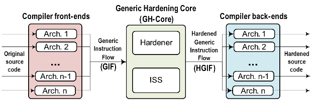

Felipe Restrepo Calle
SHE
Felipe Restrepo Calle
SHE
What is SHE?
- SHE: Software Hardening Environment.
- Tool for fault-tolerant software development.
- It allows the design and implementation of software-based mitigation techniques, which can be automatically applied into programs.
- The hardening (protection) strategy is based on code transformation rules at low level, i.e., assembly code.
- It permits to apply software-based fault tolerance techniques in a selective way, protecting only the most critical parts of the program. As a result, there is a significant reduction in overheads, and at the same time, designers have more flexibility to find the best trade-offs among the system requirements.
- Multiplatform: tested in Linux and Windows.
Scheme
Software Hardening Environment - SHE

Supported microprocessors
- Xilinx PicoBlaze 8-bit KCPSM3.
- Xilinx PicoBlaze 8-bit KCPSM6.
- Texas Instruments MSP430 16-bit.
- More can be included.
Try it online
- Available at the Fault Tolerance Lab (by University of Alicante - Spain).
More information
- Felipe Restrepo-Calle, Antonio Martínez-Álvarez, Sergio Cuenca-Asensi, Antonio Jimeno. "Selective SWIFT-R: A flexible software-based technique for soft error mitigation in low-cost embedded systems". Journal of Electronic Testing: Theory and Applications, vol. 29, no. 6, pp. 825-838, Dec., 2013. DOI:10.1007/s10836-013-5416-6.
- Antonio Martínez-Álvarez, Sergio Cuenca-Asensi, Felipe Restrepo-Calle, Francisco R. Palomo, Hipólito Guzmán-Miranda, and Miguel A. Aguirre. "Compiler-Directed Soft Error Mitigation for Embedded Systems," IEEE Transactions on Dependable and Secure Computing, vol.9, no.2, pp.159-172, March-April 2012. ISSN:1545-5971. DOI=10.1109/TDSC.2011.54.
- Sergio Cuenca-Asensi, Antonio Martínez-Álvarez, Felipe Restrepo-Calle, Francisco R. Palomo, Hipólito Guzmán-Miranda, and Miguel A. Aguirre. "A novel co-design approach for soft errors mitigation in embedded systems". IEEE Transactions on Nuclear Science, vol. 58, no. 3, pp.1059-1065, June 2011. ISSN:0018-9499. DOI:10.1109/TNS.2011.2112379.